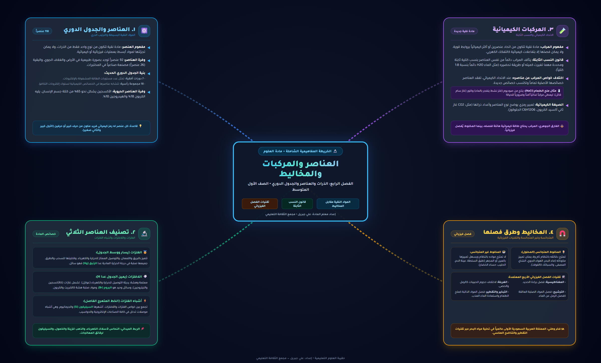

📄 الملخص السبوري
⬇️ تحميل PDFالخريطة الذهنية التفاعلية
استكشف المفاهيم بالطي والنقر أو تحكم بالخريطة البصرية بالتكبير والتصغير
الذرة (Atom)
أصغر جسيمأصغر جزء من المادة يحتفظ بخصائص العنصر، وتتكون من نواة مركزية بها بروتونات موجبة (+) ونيوترونات متعادلة، وتدور حولها إلكترونات سالبة (-).
العنصر الكيميائي (Element)
118 عنصراًمادة نقية تتألف من نوع واحد فقط من الذرات ولا يمكن تفكيكها إلى ما هو أبسط منها. يوجد 92 عنصراً في الطبيعة، والباقي مصنّع في المختبرات.
الجدول الدوري الحديث
تصنيف العناصرمخطط ينظم العناصر حسب أعدادها الذرية وتكرار خواصها، ويقسمها إلى ثلاث فئات رئيسية: الفلزات (معظم العناصر)، واللافلزات، وأشباه الفلزات.
مفهوم المركب (Compound)
اتحاد كيميائيمادة نقية تنتج من اتحاد عنصرين أو أكثر بروابط كيميائية بنسب وزنية محددة وثابتة دائماً (مثل ملح الطعام NaCl والماء H2O).
اختلاف خواص المركب
قاعدة ذهبيةتختلف خصائص المركب اختلافاً تاماً عن خصائص العناصر المكونة له؛ فملح الطعام آمن ومغذٍّ بينما يتكون من فلز الصوديوم المتفجر وغاز الكلور السام.
الصيغة الكيميائية
تحديد النسبرموز تبين العناصر المكونة للمركب ونسبة الذرات فيه؛ فمثلاً صيغة الماء H2O تعني وجود ذرتي هيدروجين مقابل كل ذرة أكسجين.
مفهوم المخلوط (Mixture)
مزج فيزيائيمادتان أو أكثر تمتزجان معاً بأي نسبة دون حدوث تفاعل كيميائي، وتحتفظ كل مادة بخواصها الأصلية ويمكن فصلها بسهولة بطرق فيزيائية.
المخلوط غير المتجانس
مكونات مميزةمخلوط لا تتوزع مكوناته بانتظام ويمكن تمييز مواده بسهولة بالعين المجردة (مثل: السلطة، الرمل والماء، الزيت والماء، حساء الخضار).
المخلوط المتجانس (المحلول)
توزيع منتظممخلوط تمتزج مواده بانتظام تام على المستوى الجزيئي ويصعب التمييز بينها. يتكون من مذاب ومذيب (مثل: الشاي، السكر والماء، الهواء الجوي، الفولاذ).
الترشيح (Filtration)
حجم الحبيباتفصل مادة صلبة غير ذائبة عن السائل باستخدام حاجز أو ورقة ترشيح (مثل: فصل حبيبات الرمل عن الماء).
التبخير والتكثيف / التقطير
درجة الغليانفصل مادة صلبة ذائبة في سائل بتبخير السائل، أو فصل سائلين مختلفين في درجة الغليان بالتقطير (مثل: استخلاص الملح من ماء البحر).
الفصل بالمغناطيس
المغناطيسيةفصل المواد التي تنجذب للمغناطيس (كبرادة الحديد) عن المواد الأخرى التي لا تنجذب له (كالرمل أو الكبريت).
الطفو والترويق والغربلة
الكثافة والحجمالطفو والترويق يفصلان المواد حسب اختلاف الكثافة (كالزيت فوق الماء)، والغربلة تفصل الحبيبات حسب تفاوت أحجامها (كالحصى عن الرمل).

💡 يمكنك السحب بالماوس أو اللمس للتحريك، واستخدام عجلة الماوس أو اللمس المزدوج للتكبير

🧪 المختبر الافتراضي
⛶ فتح في نافذة كاملةجاري تحميل السؤال...
أحسنت! أكملت الاختبار الذاتي
لقد انتهيت من مراجعة كافة أسئلة الدرس بنجاح
النسبة المئوية: 0%